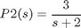
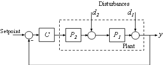
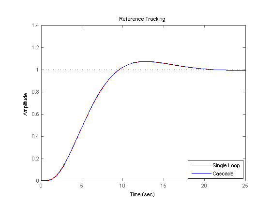
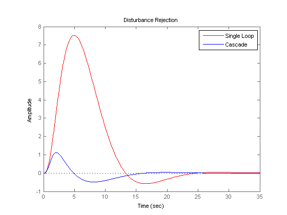

PI コントローラーを使用したカスケード制御システムの設計
このデモでは、カスケード制御ループ内で 2 つの PI コントローラーを設計する方法を示します。
目次
カスケード制御の紹介
カスケード制御は主に、プラントの他の部分へ伝播する前に外乱抑圧を高速に行うために使用します。 この非常にシンプルなカスケード制御システムには、次のブロック ダイアグラムに示すように、2 つの制御ループ (内側および外側) が含まれています。

外側のループのコントローラー C1 は、内側のループの設定値を設定することによって主要制御変数 y1 を調節するプライマリ コントローラーです。 内側のループのコントローラー C2 は、P1 に伝播する前にローカルで外乱 d2 を抑圧するセカンダリ コントローラーです。 カスケード制御システムが正しく動作するには、内側のループが外側のループより高速に応答しなければなりません。
この例では、1 つの PI コントローラーで単一ループ制御システムを、また、2 つの PI コントローラーでカスケード制御システムを設計します。 2 つの制御システムの応答を、基準追従と外乱抑圧において比較します。
プラント
この例では、内側のループのプラント P2 は、以下のようになります。

外側のループのプラント P1 は、以下のようになります。

P2 = zpk([],-2,3); P1 = zpk([],[-1 -1 -1],10);
PI コントローラーを使用した単一ループ制御システムの設計
pidtune コマンドを使用して、プラントモデル P = P1 * P2 全体に対する標準型 PI コントローラーを設計します。

適切な開ループ幅は 0.2 ラジアン/秒 で、これは約 10 秒の応答時間に相当します。
% The plant model is P = P1*P2 P = P1*P2; % Use a PID or PIDSTD object to define the desired controller structure C = pidstd(1,1); % Use pidtune options to specify performance and robustness targets options = pidtuneOptions('CrossoverFrequency',0.2); % Design PI controller C = pidtune(P,C,options); C
Continuous-time PI controller in standard form:
1 1
Kp * (1 + ---- * ---)
Ti s
with Kp = 0.0119, Ti = 0.84931
2 つの PI コントローラーを使用したカスケード制御システムの設計
内側のループのコントローラー C2 を設計する最適な方法としては、まず内側のループを閉じた状態で外側のループのコントローラー C1 を設計します。この例では、内側のループ幅には、目的とする外側のループ幅の 10 倍である 2 ラジアン/秒を選択します。効果的なカスケード制御システムにするには、内側のループが外側のループより高速に応答することが必要です。
開ループの帯域幅を 2 ラジアン/秒にして、内側のループのコントローラー C2 を設計します。
C2 = pidtune(P2,pidstd(1,1),pidtuneOptions('CrossoverFrequency',2));
C2
Continuous-time PI controller in standard form:
1 1
Kp * (1 + ---- * ---)
Ti s
with Kp = 0.24402, Ti = 0.13397
同じ帯域幅で単一ループ システムとして外側のループのコントローラー C1 を設計します。
% Inner loop system when the control loop is closed first clsys = feedback(P2*C2,1); % Plant seen by the outer loop controller C1 is clsys*P1 C1 = pidtune(clsys*P1,pidstd(1,1),pidtuneOptions('CrossoverFrequency',0.2)); C1
Continuous-time PI controller in standard form:
1 1
Kp * (1 + ---- * ---)
Ti s
with Kp = 0.014991, Ti = 0.71582
性能の比較
まず、両方の制御システムについて、ステップ基準追従応答をプロットします。
% single loop system for reference tracking sys1 = feedback(P*C,1); set(sys1,'Name','Single Loop'); % cascade system for reference tracking sys2 = feedback(clsys*P1*C1,1); set(sys2,'Name','Cascade'); % plot step response figure;step(sys1,'r',sys2,'b') legend('show','location','southeast') title('Reference Tracking')
次に、両方の制御システムについて、d2 のステップ外乱抑圧応答をプロットします。
% single loop system for rejecting d2 sysd1 = feedback(P1,P2*C); set(sysd1,'Name','Single Loop'); % cascade system for rejecting d2 sysd2 = P1/(1+P2*C2+P2*P1*C1*C2); set(sysd2,'Name','Cascade'); % plot step response figure;step(sysd1,'r',sysd2,'b') legend('show') title('Disturbance Rejection')
2 つの応答プロットから、カスケード制御システムは外乱 d2 に対する抑圧性能がより優れており、一方、設定値追従性能についてはほぼ同等であると結論付けられます。